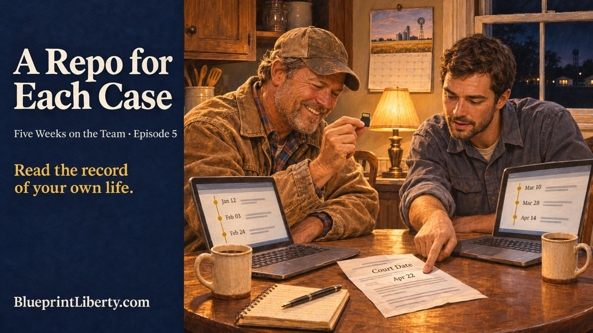

← Runtime Republic · Five Weeks on the Team
Five Weeks on the Team · Episode 5 of 10 · about 7 minutes · Draft under review

A week after the two traffic stops, Dale and Jake sat at Dale's kitchen table with their laptops open. Both cases were still open. Both had court dates. And both men had the same feeling: they were waiting on papers they couldn't see, from people they rarely heard from.
Jake said it first. "Every week we put our budget in a repo. Every receipt, every tax, every change, with a date and a hash. Why can't my case work the same way?"
Dale nodded. "What if we asked our lawyers to start one? A repo for each case. Every filing, every date, every piece of evidence, in order, where we can see it."
They opened the app and asked it to help them think it through. As always, it asked them first. What problem are you trying to fix? Jake wrote: "I don't know where my case stands unless I call and wait for a callback." Dale wrote: "I have the one piece of evidence that matters most, and I want to prove nobody ever changed it."
Then the app helped them look at what already exists. Kansas district courts post public case information online through the Kansas District Court Public Access Portal. Anyone can register for an account and search it. So Jake registered and found his own case. He saw the charge, his court dates and a list of filings. Some documents weren't there. The portal only shows what the law allows the public to see online, and some records can only be viewed at the courthouse terminal.
Dale asked the question that had been on his mind all week. "Can the AI just read the portal for us? Does the court have an API, or one of those MCP connections, so the app can check our cases every morning the way it checks our bank accounts?"
The app gave them an honest answer. It could not find a public API for the Kansas district court portal. Logging in and searching by hand is the way in, under the portal's user agreement, and the app would not try to get around that. But it did find one place where an AI connection already exists. A nonprofit called the Free Law Project runs a site called CourtListener, a large free collection of court opinions and federal case records. Its connection for AI assistants is listed in Anthropic's connector directory, and an account comes with free API access. So the AI could read published court decisions, the cases that explain the law, directly from the source. But Dale's and Jake's own cases are in a Kansas district court, not a federal court, and those dockets were not part of that connection.
"So the law is open to the AI," Jake said, "but our own cases aren't."
"That's the gap," Dale said. "That's the station on the map where the trail goes cold."
The team met on Sunday, and Dale and Jake brought their idea. Ruth liked it right away. Maria had questions. "Will your lawyers even do it? They have their own systems. And isn't some of what they get from the prosecutor private?"
The app, acting as a neutral ombudsman, helped the team sort it out. A lawyer works for the client, and the client can ask. The lawyer may say yes, no or partly. Some evidence a defense lawyer receives may be covered by court rules or orders about who can see it and where it can go. And nothing that identifies a person belongs in a public place. So the team drew three boxes.
The first box was the case repo itself. It is private and owned by the person charged. That person decides who gets access: his lawyer, his wife, his pastor. It holds his own copies of what he is allowed to have.
The second box was the public record. The case number, the court dates and the filings the court already shows online get copied by hand into the private repo with the date they were checked, the same way the team copies a bank balance with an as-of date.
The third box was the public workshop. Only the process goes there: the stations of the night, with no names, no case numbers and no faces. That is what the police encounter workshop is for.
Then came Dale's part, and it was the simplest. His dash camera footage was his own. Nobody had to give it to him. So he did what the team does every Saturday at close-out. He put the video file in his private case repo and sealed it with a hashmark. If anyone ever changes a single frame, the hash won't match. He gave his lawyer a copy and the hash on the same day. "Now nobody can say I edited it," he said, "and nobody can say they lost it."
Jake took his idea to his lawyer that week. He kept it short. "I'm not asking you to change how you work. I'm asking for a copy of anything I'm allowed to have, and a quick note when a date moves. I'll keep it organized myself." His lawyer was surprised, then said yes to most of it. She said a few things had to stay in her office for now. Jake wrote that down too, as an open item with the date he asked.
Dale's lawyer was slower to answer. He liked the dash camera hash. He was less sure about the rest. Dale didn't push. He wrote his request and the date in the repo and left it open. "It's a request on the record," he said. "That's enough for this week."
As always, the workshop asked everyone for a fix. Jake's was this: every Kansas court case should have a public timeline the person charged can follow, in plain language, updated when something changes, without calling anyone. Dale's was this: any video a person brings to his own defense should be sealed and logged on the day it is turned in, so its history can never be in doubt. Brittany added one: when the public portal can be read by a person, it should also be readable by that person's own tools, through a free and official connection, under the same rules. An AI suggested one more, and the team scored them all. Brittany's idea won the week, because it fixed the station where everyone's trail went cold, not just theirs.
Pastor Dan asked one question before they closed. "Is this about winning your cases?"
Jake thought about it. "No. It's about being able to see my own case. A citizen ought to be able to read the record of his own life without asking permission every time."
The cases stayed open. Two private repos now had a timeline, a list of open requests, and one sealed video. On Thursday night, Jake's lawyer added a short note to his repo. She had received the dispatch log from the night of the stops and wanted to go over the times with him. She didn't say why. Jake read it twice, then went to bed. The answer would have to wait until next week.
← Episode 4 · Series index · Episode 6 →